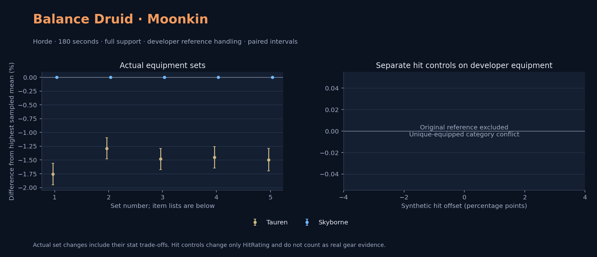

Horde · Tauren / Skyborne

No pet or guardian appears in the reference combat metrics. Reference: Tauren, developer equipment, 180 seconds and full support. Pet choices remain those of the developer build.
[{"category": 707, "items": [{"id": 272438, "name": "Weakness Analyzer"}, {"id": 272439, "name": "Serenity Field"}]}]
The original remains a diagnostic. It does not enter the recommendations or the actual-equipment chart.
WoWSims developer · Developer P1
Unimplemented enchant or active set effects: [{"id": 493, "pieces": 3, "effects": ["Increased Defense +15.", "+150 Armor."]}, {"id": 493, "pieces": 5, "effects": ["Reduces the cooldown of Rebirth by 10.0 minutes."]}]
180 seconds, full support and original developer references. Hit below is generic sheet melee / spell hit; school and talent bonuses can be attached directly to spells.
| Race | DPS | Gap and interval | Generic hit | Replay |
|---|---|---|---|---|
| Skyborne | 800.67 | +0.000% ± 0.000 | 10.0% / 10.0% | Native input · Website JSON |
| Tauren | 786.62 | -1.755% ± 0.195 | 10.0% / 10.0% | Native input · Website JSON |
| Slot | Item | ID | Enchant |
|---|---|---|---|
| Head | Genesis Helm | 21353 | |
| Neck | Choker of the Fire Lord | 18814 | |
| Shoulder | Genesis Shoulderpads | 21354 | |
| Back | Cloak of Unending Life | 21409 | |
| Chest | Genesis Vest | 21357 | |
| Wrist | Bracers of the Fallen Son | 21594 | |
| Hands | Dark Storm Gauntlets | 21585 | |
| Waist | Corehound Belt | 19162 | |
| Legs | Genesis Trousers | 21356 | |
| Feet | Genesis Boots | 21355 | |
| Ring 1 | Ring of the Fallen God | 21709 | |
| Ring 2 | Band of the Inevitable | 23031 | |
| Trinket 1 | Neltharion's Tear | 19379 | |
| Trinket 2 | The Restrained Essence of Sapphiron | 23046 | |
| Main hand | Mace of Unending Life | 21407 | |
| Off hand | Master Dragonslayer's Orb | 19366 | |
| Ranged / relic | Idol of the Moon | 23197 |
Published ranked alternatives · Published pre-raid
Recorded source replacements: [{"slot": "head", "from": 13404, "to": 252561, "publishedAlternativeRank": 1, "publishedEpDelta": -12.3, "reason": "First published alternative compatible with the current WoWSims database, class, faction and occupied slots."}, {"slot": "feet", "from": 11822, "to": 275606, "publishedAlternativeRank": 1, "publishedEpDelta": -1.2, "reason": "First published alternative compatible with the current WoWSims database, class, faction and occupied slots."}]
Unimplemented enchant or active set effects: [{"id": 144, "pieces": 2, "effects": ["Increases damage and healing done by magical spells and effects by up to 20."]}]
Unmeasured proc rates: [{"source": "item", "id": 2243, "name": "Hand of Edward the Odd", "kind": "ppm", "origin": "vanilla"}]
180 seconds, full support and original developer references. Hit below is generic sheet melee / spell hit; school and talent bonuses can be attached directly to spells.
| Race | DPS | Gap and interval | Generic hit | Replay |
|---|---|---|---|---|
| Skyborne | 678.68 | +0.000% ± 0.000 | 6.7% / 6.7% | Native input · Website JSON |
| Tauren | 669.93 | -1.289% ± 0.194 | 6.7% / 6.7% | Native input · Website JSON |
| Slot | Item | ID | Enchant |
|---|---|---|---|
| Head | Living Crown | 252561 | Arcanum of Focus |
| Neck | Archlight Talisman | 15856 | Enchant Necklace - Spell Power |
| Shoulder | Ironfeather Shoulders | 15067 | |
| Back | Arcanoweave Cloak | 272411 | |
| Chest | Ironfeather Breastplate | 15066 | Mystic Rugged Armor Kit |
| Wrist | Runecloth Cuffs | 254123 | Enchant Bracer - Greater Spellpower |
| Hands | Gloves of the Greatfather | 17721 | Enchant Gloves - Arcane Power |
| Waist | Belt of the Archmage | 18405 | |
| Legs | Ironfeather Leggings | 252486 | Arcanum of Focus |
| Feet | Venomspew Footpads | 275606 | Mystic Rugged Armor Kit |
| Ring 1 | Blessed Band of Light | 272407 | |
| Ring 2 | Maiden's Circle | 13001 | |
| Trinket 1 | Weakness Analyzer | 272438 | |
| Trinket 2 | Rune of the Guard Captain | 19120 | |
| Main hand | Hand of Edward the Odd | 2243 | |
| Off hand | Spirit of Aquementas | 11904 | Enchant Off-Hand - Superior Intellect |
| Ranged / relic | Swarming Idol | 272430 |
Published one-slot hit alternative · Published pre-raid
One source-listed alternative; at least 80% of the source slot score retained. Reported hit selects the contrast; only native stats determine simulation outcomes. This is an experimental combination, not an endorsed best set.
Recorded source replacements: [{"slot": "head", "from": 13404, "to": 252561, "publishedAlternativeRank": 1, "publishedEpDelta": -12.3, "reason": "First published alternative compatible with the current WoWSims database, class, faction and occupied slots."}, {"slot": "feet", "from": 11822, "to": 275606, "publishedAlternativeRank": 1, "publishedEpDelta": -1.2, "reason": "First published alternative compatible with the current WoWSims database, class, faction and occupied slots."}]
Unimplemented enchant or active set effects: [{"id": 144, "pieces": 2, "effects": ["Increases damage and healing done by magical spells and effects by up to 20."]}]
Unmeasured proc rates: [{"source": "item", "id": 2243, "name": "Hand of Edward the Odd", "kind": "ppm", "origin": "vanilla"}]
180 seconds, full support and original developer references. Hit below is generic sheet melee / spell hit; school and talent bonuses can be attached directly to spells.
| Race | DPS | Gap and interval | Generic hit | Replay |
|---|---|---|---|---|
| Skyborne | 674.30 | +0.000% ± 0.000 | 7.7% / 7.7% | Native input · Website JSON |
| Tauren | 664.30 | -1.483% ± 0.192 | 7.7% / 7.7% | Native input · Website JSON |
| Slot | Item | ID | Enchant |
|---|---|---|---|
| Head | Living Crown | 252561 | Arcanum of Focus |
| Neck | Archlight Talisman | 15856 | Enchant Necklace - Spell Power |
| Shoulder | Ironfeather Shoulders | 15067 | |
| Back | Arcanoweave Cloak | 272411 | |
| Chest | Ironfeather Breastplate | 15066 | Mystic Rugged Armor Kit |
| Wrist | Runecloth Cuffs | 254123 | Enchant Bracer - Greater Spellpower |
| Hands | Stormshroud Gloves | 21278 | Enchant Gloves - Arcane Power |
| Waist | Belt of the Archmage | 18405 | |
| Legs | Ironfeather Leggings | 252486 | Arcanum of Focus |
| Feet | Venomspew Footpads | 275606 | Mystic Rugged Armor Kit |
| Ring 1 | Blessed Band of Light | 272407 | |
| Ring 2 | Maiden's Circle | 13001 | |
| Trinket 1 | Weakness Analyzer | 272438 | |
| Trinket 2 | Rune of the Guard Captain | 19120 | |
| Main hand | Hand of Edward the Odd | 2243 | |
| Off hand | Spirit of Aquementas | 11904 | Enchant Off-Hand - Superior Intellect |
| Ranged / relic | Swarming Idol | 272430 |
Published ranked alternatives · Published pre-raid
Recorded source replacements: [{"slot": "head", "from": 13404, "to": 252561, "publishedAlternativeRank": 1, "publishedEpDelta": -12.3, "reason": "First published alternative compatible with the current WoWSims database, class, faction and occupied slots."}, {"slot": "shoulder", "from": 227808, "to": 19050, "publishedAlternativeRank": 1, "publishedEpDelta": -10.4, "reason": "First published alternative compatible with the current WoWSims database, class, faction and occupied slots."}, {"slot": "waist", "from": 228190, "to": 18405, "publishedAlternativeRank": 1, "publishedEpDelta": -9.1, "reason": "First published alternative compatible with the current WoWSims database, class, faction and occupied slots."}, {"slot": "feet", "from": 11822, "to": 275606, "publishedAlternativeRank": 1, "publishedEpDelta": -1.2, "reason": "First published alternative compatible with the current WoWSims database, class, faction and occupied slots."}]
Unmeasured proc rates: [{"source": "item", "id": 2243, "name": "Hand of Edward the Odd", "kind": "ppm", "origin": "vanilla"}]
180 seconds, full support and original developer references. Hit below is generic sheet melee / spell hit; school and talent bonuses can be attached directly to spells.
| Race | DPS | Gap and interval | Generic hit | Replay |
|---|---|---|---|---|
| Skyborne | 688.83 | +0.000% ± 0.000 | 6.9% / 6.9% | Native input · Website JSON |
| Tauren | 678.84 | -1.451% ± 0.195 | 6.9% / 6.9% | Native input · Website JSON |
| Slot | Item | ID | Enchant |
|---|---|---|---|
| Head | Living Crown | 252561 | Arcanum of Focus |
| Neck | Archlight Talisman | 15856 | Enchant Necklace - Spell Power |
| Shoulder | Mantle of the Timbermaw | 19050 | |
| Back | Arcanoweave Cloak | 272411 | |
| Chest | Fernpulse Jerkin | 15786 | Mystic Rugged Armor Kit |
| Wrist | Runecloth Cuffs | 254123 | Enchant Bracer - Greater Spellpower |
| Hands | Gloves of the Greatfather | 17721 | Enchant Gloves - Arcane Power |
| Waist | Belt of the Archmage | 18405 | |
| Legs | Ironfeather Leggings | 252486 | Arcanum of Focus |
| Feet | Venomspew Footpads | 275606 | Mystic Rugged Armor Kit |
| Ring 1 | Blessed Band of Light | 272407 | |
| Ring 2 | Maiden's Circle | 13001 | |
| Trinket 1 | Weakness Analyzer | 272438 | |
| Trinket 2 | Frozen Heart of the Mountain | 249469 | |
| Main hand | Hand of Edward the Odd | 2243 | |
| Off hand | Spirit of Aquementas | 11904 | Enchant Off-Hand - Superior Intellect |
| Ranged / relic | Swarming Idol | 272430 |
Published one-slot hit alternative · Published pre-raid
One source-listed alternative; at least 80% of the source slot score retained. Reported hit selects the contrast; only native stats determine simulation outcomes. This is an experimental combination, not an endorsed best set.
Recorded source replacements: [{"slot": "head", "from": 13404, "to": 252561, "publishedAlternativeRank": 1, "publishedEpDelta": -12.3, "reason": "First published alternative compatible with the current WoWSims database, class, faction and occupied slots."}, {"slot": "shoulder", "from": 227808, "to": 19050, "publishedAlternativeRank": 1, "publishedEpDelta": -10.4, "reason": "First published alternative compatible with the current WoWSims database, class, faction and occupied slots."}, {"slot": "waist", "from": 228190, "to": 18405, "publishedAlternativeRank": 1, "publishedEpDelta": -9.1, "reason": "First published alternative compatible with the current WoWSims database, class, faction and occupied slots."}, {"slot": "feet", "from": 11822, "to": 275606, "publishedAlternativeRank": 1, "publishedEpDelta": -1.2, "reason": "First published alternative compatible with the current WoWSims database, class, faction and occupied slots."}]
Unmeasured proc rates: [{"source": "item", "id": 2243, "name": "Hand of Edward the Odd", "kind": "ppm", "origin": "vanilla"}]
180 seconds, full support and original developer references. Hit below is generic sheet melee / spell hit; school and talent bonuses can be attached directly to spells.
| Race | DPS | Gap and interval | Generic hit | Replay |
|---|---|---|---|---|
| Skyborne | 684.26 | +0.000% ± 0.000 | 7.9% / 7.9% | Native input · Website JSON |
| Tauren | 674.04 | -1.495% ± 0.202 | 7.9% / 7.9% | Native input · Website JSON |
| Slot | Item | ID | Enchant |
|---|---|---|---|
| Head | Living Crown | 252561 | Arcanum of Focus |
| Neck | Archlight Talisman | 15856 | Enchant Necklace - Spell Power |
| Shoulder | Mantle of the Timbermaw | 19050 | |
| Back | Arcanoweave Cloak | 272411 | |
| Chest | Fernpulse Jerkin | 15786 | Mystic Rugged Armor Kit |
| Wrist | Runecloth Cuffs | 254123 | Enchant Bracer - Greater Spellpower |
| Hands | Stormshroud Gloves | 21278 | Enchant Gloves - Arcane Power |
| Waist | Belt of the Archmage | 18405 | |
| Legs | Ironfeather Leggings | 252486 | Arcanum of Focus |
| Feet | Venomspew Footpads | 275606 | Mystic Rugged Armor Kit |
| Ring 1 | Blessed Band of Light | 272407 | |
| Ring 2 | Maiden's Circle | 13001 | |
| Trinket 1 | Weakness Analyzer | 272438 | |
| Trinket 2 | Frozen Heart of the Mountain | 249469 | |
| Main hand | Hand of Edward the Odd | 2243 | |
| Off hand | Spirit of Aquementas | 11904 | Enchant Off-Hand - Superior Intellect |
| Ranged / relic | Swarming Idol | 272430 |
The same declared pool is available to every race. Each race keeps its best validation-sample set with its screening-selected racial policy. Separate samples confirm that choice, with fresh precision samples near the practical-loss boundary. Gaps use the highest sampled mean under that same duration, support and reference treatment as their reference. A zero reference gap does not certify a race; the main matrix also allows uncertainty in the leader.
| Pool | Seconds | Support | References | Race | DPS | Gap and interval | Racial policies / mana | Selected set | Generic hit: melee / spell | Replay |
|---|---|---|---|---|---|---|---|---|---|---|
| published-pre-raid | 60 | full | developer | Skyborne | 685.69 | +0.000% ± 0.0005,000 iterations | developer / developer / developerMana waits 0.0s | published-druid-balance-horde-55c2e9b60426d8de | 6.9% / 6.9% | Input · Result · Stats |
| published-pre-raid | 60 | full | developer | Tauren | 672.83 | -1.875% ± 0.1245,000 iterations | developer / developer / developerMana waits 0.0s | published-druid-balance-horde-55c2e9b60426d8de | 6.9% / 6.9% | Input · Result · Stats |
| published-pre-raid | 60 | full | explicit | Skyborne | 685.69 | +0.000% ± 0.0005,000 iterations | developer / developer / developerMana waits 0.0s | published-druid-balance-horde-55c2e9b60426d8de | 6.9% / 6.9% | Input · Result · Stats |
| published-pre-raid | 60 | full | explicit | Tauren | 672.83 | -1.875% ± 0.1245,000 iterations | developer / developer / developerMana waits 0.0s | published-druid-balance-horde-55c2e9b60426d8de | 6.9% / 6.9% | Input · Result · Stats |
| published-pre-raid | 60 | self | developer | Skyborne | 616.08 | +0.000% ± 0.0005,000 iterations | developer / developer / developerMana waits 0.0s | published-druid-balance-horde-55c2e9b60426d8de | 6.9% / 6.9% | Input · Result · Stats |
| published-pre-raid | 60 | self | developer | Tauren | 605.11 | -1.780% ± 0.1275,000 iterations | developer / developer / developerMana waits 0.0s | published-druid-balance-horde-55c2e9b60426d8de | 6.9% / 6.9% | Input · Result · Stats |
| published-pre-raid | 60 | self | explicit | Skyborne | 616.08 | +0.000% ± 0.0005,000 iterations | developer / developer / developerMana waits 0.0s | published-druid-balance-horde-55c2e9b60426d8de | 6.9% / 6.9% | Input · Result · Stats |
| published-pre-raid | 60 | self | explicit | Tauren | 605.11 | -1.780% ± 0.1275,000 iterations | developer / developer / developerMana waits 0.0s | published-druid-balance-horde-55c2e9b60426d8de | 6.9% / 6.9% | Input · Result · Stats |
| published-pre-raid | 180 | full | developer | Skyborne | 689.16 | +0.000% ± 0.0005,000 iterations | developer / developer / developerMana waits 0.0s | published-druid-balance-horde-55c2e9b60426d8de | 6.9% / 6.9% | Input · Result · Stats · Website JSON |
| published-pre-raid | 180 | full | developer | Tauren | 678.01 | -1.618% ± 0.0895,000 iterations | developer / developer / developerMana waits 0.0s | published-druid-balance-horde-55c2e9b60426d8de | 6.9% / 6.9% | Input · Result · Stats · Website JSON |
| published-pre-raid | 180 | full | explicit | Skyborne | 689.16 | +0.000% ± 0.0005,000 iterations | developer / developer / developerMana waits 0.0s | published-druid-balance-horde-55c2e9b60426d8de | 6.9% / 6.9% | Input · Result · Stats |
| published-pre-raid | 180 | full | explicit | Tauren | 678.01 | -1.618% ± 0.0895,000 iterations | developer / developer / developerMana waits 0.0s | published-druid-balance-horde-55c2e9b60426d8de | 6.9% / 6.9% | Input · Result · Stats |
| published-pre-raid | 180 | self | developer | Skyborne | 606.48 | +0.000% ± 0.0005,000 iterations | developer / developer / developerMana waits 5.0s | published-druid-balance-horde-55c2e9b60426d8de | 6.9% / 6.9% | Input · Result · Stats |
| published-pre-raid | 180 | self | developer | Tauren | 598.68 | -1.286% ± 0.0935,000 iterations | developer / developer / developerMana waits 3.5s | published-druid-balance-horde-55c2e9b60426d8de | 6.9% / 6.9% | Input · Result · Stats |
| published-pre-raid | 180 | self | explicit | Skyborne | 606.48 | +0.000% ± 0.0005,000 iterations | developer / developer / developerMana waits 5.0s | published-druid-balance-horde-55c2e9b60426d8de | 6.9% / 6.9% | Input · Result · Stats |
| published-pre-raid | 180 | self | explicit | Tauren | 598.68 | -1.286% ± 0.0935,000 iterations | developer / developer / developerMana waits 3.5s | published-druid-balance-horde-55c2e9b60426d8de | 6.9% / 6.9% | Input · Result · Stats |
| published-pre-raid | 300 | full | developer | Skyborne | 689.52 | +0.000% ± 0.0005,000 iterations | developer / developer / developerMana waits 0.0s | published-druid-balance-horde-55c2e9b60426d8de | 6.9% / 6.9% | Input · Result · Stats |
| published-pre-raid | 300 | full | developer | Tauren | 678.29 | -1.629% ± 0.0715,000 iterations | developer / developer / developerMana waits 0.0s | published-druid-balance-horde-55c2e9b60426d8de | 6.9% / 6.9% | Input · Result · Stats |
| published-pre-raid | 300 | full | explicit | Skyborne | 689.52 | +0.000% ± 0.0005,000 iterations | developer / developer / developerMana waits 0.0s | published-druid-balance-horde-55c2e9b60426d8de | 6.9% / 6.9% | Input · Result · Stats |
| published-pre-raid | 300 | full | explicit | Tauren | 678.29 | -1.629% ± 0.0715,000 iterations | developer / developer / developerMana waits 0.0s | published-druid-balance-horde-55c2e9b60426d8de | 6.9% / 6.9% | Input · Result · Stats |
| published-pre-raid | 300 | self | developer | Skyborne | 554.19 | +0.000% ± 0.0005,000 iterations | developer / developer / developerMana waits 52.2s | published-druid-balance-horde-64705c933b6512b2 | 6.7% / 6.7% | Input · Result · Stats |
| published-pre-raid | 300 | self | developer | Tauren | 551.10 | -0.557% ± 0.0835,000 iterations | developer / developer / developerMana waits 47.0s | published-druid-balance-horde-64705c933b6512b2 | 6.7% / 6.7% | Input · Result · Stats |
| published-pre-raid | 300 | self | explicit | Skyborne | 554.19 | +0.000% ± 0.0005,000 iterations | developer / developer / developerMana waits 52.2s | published-druid-balance-horde-64705c933b6512b2 | 6.7% / 6.7% | Input · Result · Stats |
| published-pre-raid | 300 | self | explicit | Tauren | 551.10 | -0.557% ± 0.0835,000 iterations | developer / developer / developerMana waits 47.0s | published-druid-balance-horde-64705c933b6512b2 | 6.7% / 6.7% | Input · Result · Stats |
| developer-reference | 60 | full | developer | Skyborne | 805.24 | +0.000% ± 0.0005,000 iterations | developer / developer / developerMana waits 0.0s | developer-p1 | 10.0% / 10.0% | Input · Result · Stats |
| developer-reference | 60 | full | developer | Tauren | 792.42 | -1.592% ± 0.1205,000 iterations | developer / developer / developerMana waits 0.0s | developer-p1 | 10.0% / 10.0% | Input · Result · Stats |
| developer-reference | 60 | full | explicit | Skyborne | 805.24 | +0.000% ± 0.0005,000 iterations | developer / developer / developerMana waits 0.0s | developer-p1 | 10.0% / 10.0% | Input · Result · Stats |
| developer-reference | 60 | full | explicit | Tauren | 792.42 | -1.592% ± 0.1205,000 iterations | developer / developer / developerMana waits 0.0s | developer-p1 | 10.0% / 10.0% | Input · Result · Stats |
| developer-reference | 60 | self | developer | Skyborne | 723.55 | +0.000% ± 0.0005,000 iterations | developer / developer / developerMana waits 0.0s | developer-p1 | 10.0% / 10.0% | Input · Result · Stats |
| developer-reference | 60 | self | developer | Tauren | 711.89 | -1.612% ± 0.1165,000 iterations | developer / developer / developerMana waits 0.0s | developer-p1 | 10.0% / 10.0% | Input · Result · Stats |
| developer-reference | 60 | self | explicit | Skyborne | 723.55 | +0.000% ± 0.0005,000 iterations | developer / developer / developerMana waits 0.0s | developer-p1 | 10.0% / 10.0% | Input · Result · Stats |
| developer-reference | 60 | self | explicit | Tauren | 711.89 | -1.612% ± 0.1165,000 iterations | developer / developer / developerMana waits 0.0s | developer-p1 | 10.0% / 10.0% | Input · Result · Stats |
| developer-reference | 180 | full | developer | Skyborne | 799.29 | +0.000% ± 0.0005,000 iterations | developer / developer / developerMana waits 0.0s | developer-p1 | 10.0% / 10.0% | Input · Result · Stats · Website JSON |
| developer-reference | 180 | full | developer | Tauren | 785.83 | -1.684% ± 0.0865,000 iterations | developer / developer / developerMana waits 0.0s | developer-p1 | 10.0% / 10.0% | Input · Result · Stats · Website JSON |
| developer-reference | 180 | full | explicit | Skyborne | 799.29 | +0.000% ± 0.0005,000 iterations | developer / developer / developerMana waits 0.0s | developer-p1 | 10.0% / 10.0% | Input · Result · Stats |
| developer-reference | 180 | full | explicit | Tauren | 785.83 | -1.684% ± 0.0865,000 iterations | developer / developer / developerMana waits 0.0s | developer-p1 | 10.0% / 10.0% | Input · Result · Stats |
| developer-reference | 180 | self | developer | Skyborne | 710.76 | +0.000% ± 0.0005,000 iterations | developer / developer / developerMana waits 0.3s | developer-p1 | 10.0% / 10.0% | Input · Result · Stats |
| developer-reference | 180 | self | developer | Tauren | 698.00 | -1.796% ± 0.0835,000 iterations | developer / developer / developerMana waits 0.1s | developer-p1 | 10.0% / 10.0% | Input · Result · Stats |
| developer-reference | 180 | self | explicit | Skyborne | 710.76 | +0.000% ± 0.0005,000 iterations | developer / developer / developerMana waits 0.3s | developer-p1 | 10.0% / 10.0% | Input · Result · Stats |
| developer-reference | 180 | self | explicit | Tauren | 698.00 | -1.796% ± 0.0835,000 iterations | developer / developer / developerMana waits 0.1s | developer-p1 | 10.0% / 10.0% | Input · Result · Stats |
| developer-reference | 300 | full | developer | Skyborne | 796.39 | +0.000% ± 0.0005,000 iterations | developer / developer / developerMana waits 0.0s | developer-p1 | 10.0% / 10.0% | Input · Result · Stats |
| developer-reference | 300 | full | developer | Tauren | 785.06 | -1.423% ± 0.0695,000 iterations | developer / developer / developerMana waits 0.0s | developer-p1 | 10.0% / 10.0% | Input · Result · Stats |
| developer-reference | 300 | full | explicit | Skyborne | 796.39 | +0.000% ± 0.0005,000 iterations | developer / developer / developerMana waits 0.0s | developer-p1 | 10.0% / 10.0% | Input · Result · Stats |
| developer-reference | 300 | full | explicit | Tauren | 785.06 | -1.423% ± 0.0695,000 iterations | developer / developer / developerMana waits 0.0s | developer-p1 | 10.0% / 10.0% | Input · Result · Stats |
| developer-reference | 300 | self | developer | Skyborne | 657.20 | +0.000% ± 0.0005,000 iterations | developer / developer / developerMana waits 48.9s | developer-p1 | 10.0% / 10.0% | Input · Result · Stats |
| developer-reference | 300 | self | developer | Tauren | 653.33 | -0.589% ± 0.0785,000 iterations | developer / developer / developerMana waits 43.2s | developer-p1 | 10.0% / 10.0% | Input · Result · Stats |
| developer-reference | 300 | self | explicit | Skyborne | 657.20 | +0.000% ± 0.0005,000 iterations | developer / developer / developerMana waits 48.9s | developer-p1 | 10.0% / 10.0% | Input · Result · Stats |
| developer-reference | 300 | self | explicit | Tauren | 653.33 | -0.589% ± 0.0785,000 iterations | developer / developer / developerMana waits 43.2s | developer-p1 | 10.0% / 10.0% | Input · Result · Stats |
180 seconds, full support and the developer equipment anchor. These checks test creature sensitivity without a full gear search.
| Target | References | Race | DPS | Gap and interval | Replay |
|---|
Conflicting unique-equipped developer items excluded from recommendations; Some equipment has unimplemented enchant or set effects; Some equipment uses unmeasured proc rates
These known-issue notes are source context. Runtime checks establish current cast coverage, including Mutilate. They do not prove every mechanic matches the game.